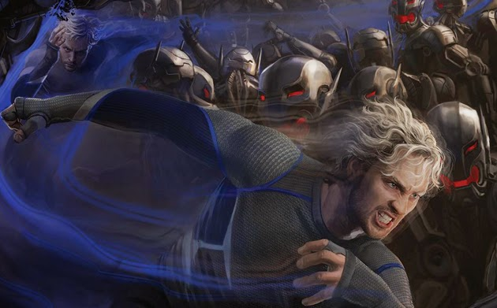

Aaron Taylor-Johnson sebagai Pietro Maximoff / Quicksilver, merupakan salah satu tokoh dalam komik Marvel. Tokoh ini diciptakan oleh Jack Kirby dan Stan Lee. Quicksilver pertama kali muncul pada komik The X-Men vol.4 yang diterbitkan pada bulan maret 1964. Karaker ini merupakan pahlawan super yang gabung dengan cerita X-Men.
Pietro Maximoff atau Quicksilver awalnya merupakan mutan yang jahat. Namun Pietro melakukannya demi melindungi saudarinya bernama Wanda Maximoff yang juga memiliki bakat unik. Dalam komiknya pernah terjadi suatu kejadian dimana Wanda tak mampu mengontrol dirinya sehingga nyaris membakar seluruh isi rumah. Saat itu Pietro tak mampu berbuat apa-apa. Beruntung saat itu ada Magneto yang menyelamatkan mereka.
Dalam komiknya diceritakan jika Pietro dan Wanda direkrut oleh Magneto yang merupakan ayah mereka untuk memerangi para manusia yang membenci kaum mutan. Duet Quicksilver dan Saudarinya sangat ditakuti dan mereka mendapat julukan mutan kejam bersaudara. Karena perang besar terjadi diantara para mutan wanda dan Pietro terdesak dan akhirnya lari ke Eropa. Saat itu mereka menyadari kesalahan mereka dan mengetahui jika dirinya hanya diperalat sang ayah. Akhirnya mencoba untuk bertobat dan hal tersebut semakin jelas ketika dirinya bertemu dengan Tony Stark lalu bergabung dengan kelompok Avengers.
Kisah Quicksilver dalam komik Marvel memang sedikit rumit. Sempat bergabung dengan Avengers namun akhirnya keluar. Kemudian ia kembali muncul dalam komik The Amazing Spider-man. Quicksilver pun sempat muncul sebagai anggota X-men dalam komiknya. Jadi tak mengherankan jika Quicksilver juga hadir dalam dua film yang berbeda yakni X-Men: Day of future past dan Avengers: Age of Ultron.
Sebagai mutan, Quicksilver memiliki kemampuan bergerak super cepat. Ia bahkan dapat berlari melebihi kecepatan suara. Dengan kecepatan tersebut, Quicksilver memiliki kemampuan membuat topan, dan juga berjalan di air. Sayangnya keadaan tersebut kadang membuat dirinya tak sabaran dengan orang sekitar karena ia merasakan gerakan sekitar sangat lambat.
Dalam komiknya, Quicksilver akan kehilangan kekuatannya namun kemudian dirinya malah mendapat kekeuatan yang lebih hebat. Ia mampu melakukan teleportasi dan menembus masa depan dan masa lalu dengan kecepatannya.